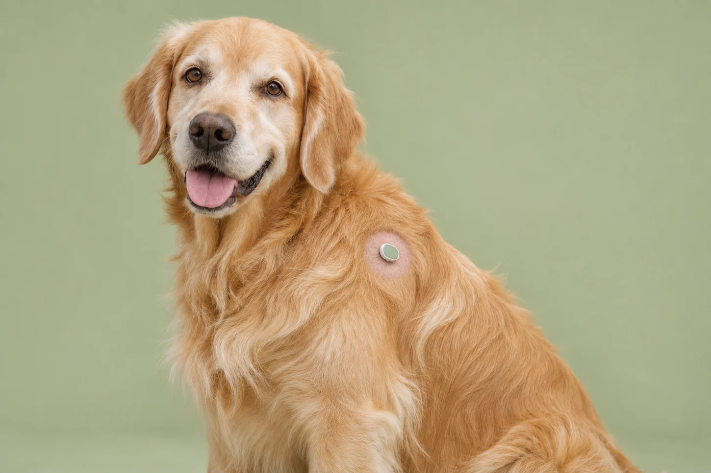

01 Prepare & apply
Prepare a coin-sized shaved area before applying the sticker. Placement and skin preparation should follow veterinary guidance.
If your best friend felt unwell but couldn’t speak, how would you know? CanineStride’s wearable mobility sticker and companion app are designed to help you notice changes in movement, record your observations, and share a clearer picture with your vet.
Proposed mobility kit + app access
For senior dogs and dogs with mobility concerns.
Interested in learning more? Sign up for launch updates ↗

Prepare a coin-sized shaved area before applying the sticker. Placement and skin preparation should follow veterinary guidance.
Log walks, energy and stiffness beside movement trends, so everyday changes have context.
Bring a 14-day summary of trends and your observations to your next veterinary conversation.
A dog profile, movement trends, and reports to share with your veterinarian. See how the experience comes together.
Simulated screens and sample values. No live sensor is connected.